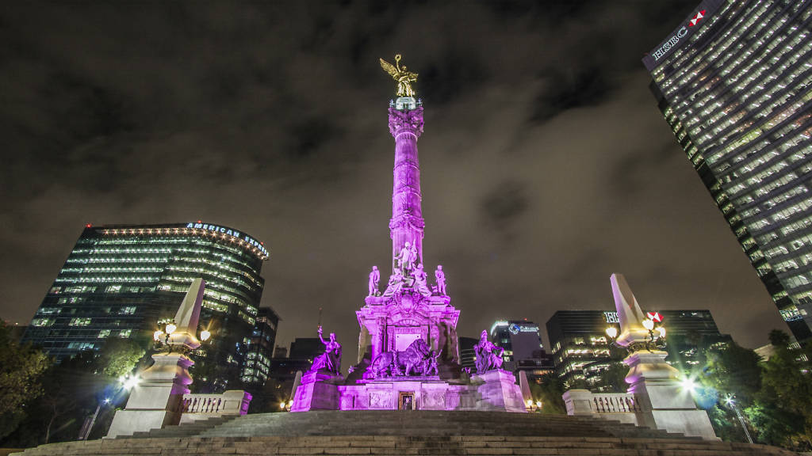
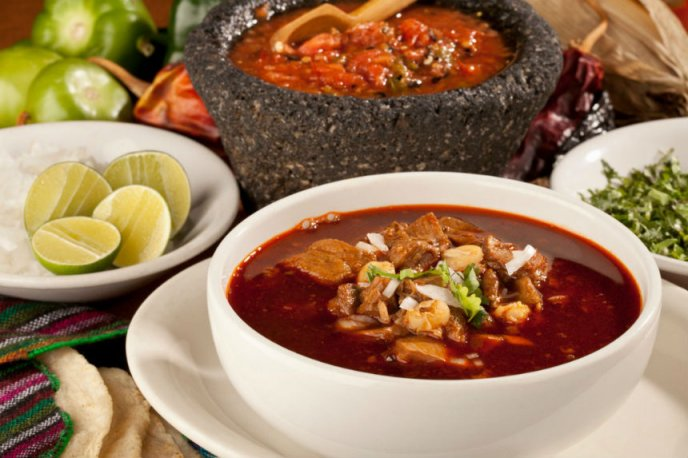
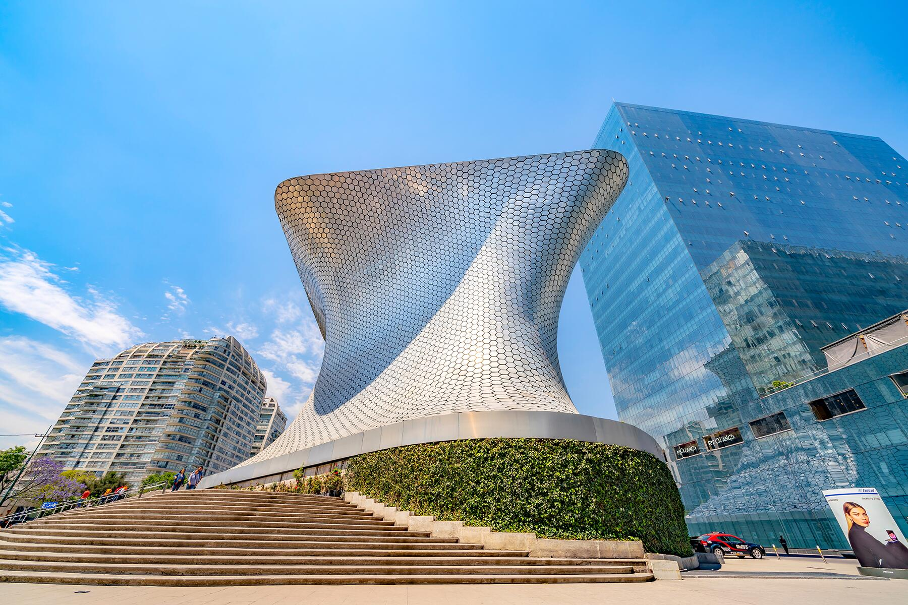
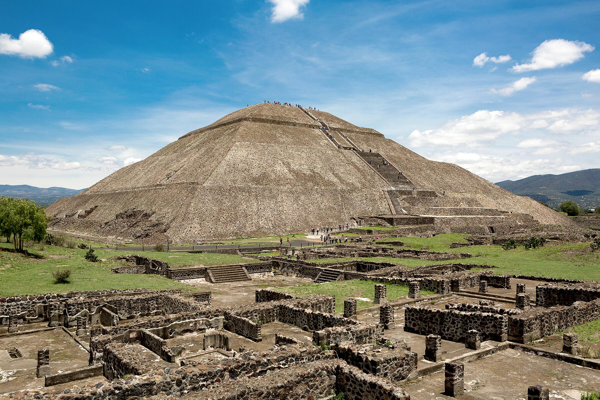
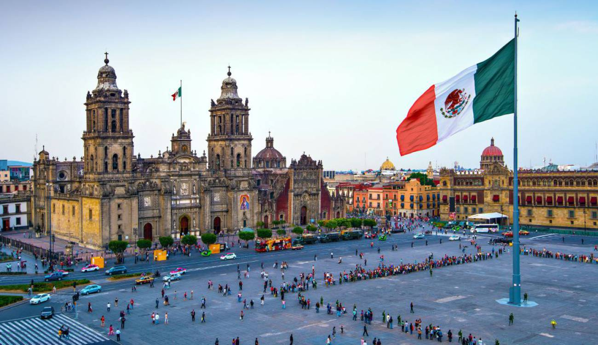
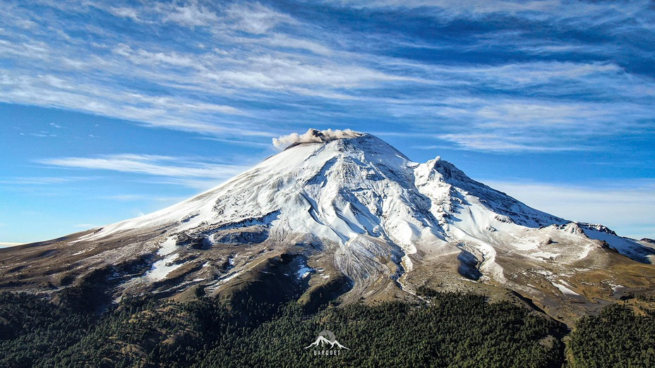
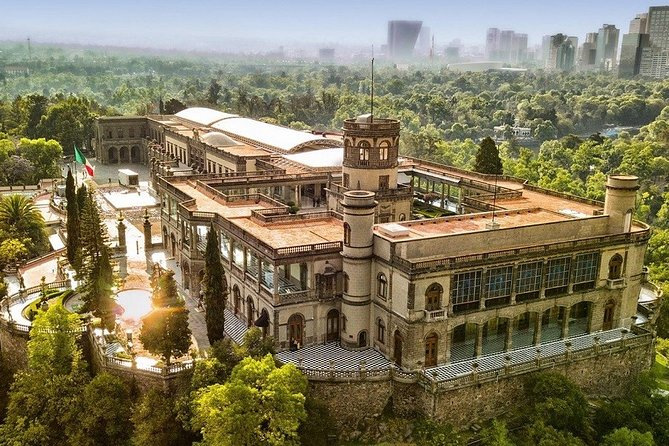

Mexico City, Mexico’s largest city and the most populous metropolitan area in the Western Hemisphere, is also known as Distrito Federal, or the federal district. It is the country’s economic and cultural hub, as well as home to the offices of the federal government. The city has many well-known and respected museums, such as the Museo Casa Frida Kahlo and the Museo Nacional de Historia. Students come from all over to attend area schools, which include the Universidad Nacional Autonoma de Mexico and the Instituto Politecnicon Nacional. Sports stadiums such as Estadio Azteca and the Autodromo Hermanos Rodriguez provide thrilling diversions for residents and vacationers.
Did you know?
During the Aztec period, Mexico City was initially built over a lake, the Lago de Texcoco. Aztecs built an artificial island by dumping soil into the lagoon. Later, the Spaniards erected a second Mexico City atop the ruins of Tenochtitlán.
Gastronomy in Mexico City

Barbacoa de borrego is one of the most popular traditional dishes. It is more commonly prepared in the suburban outskirts in the Mexico City environs, such as Texcoco, where there is a centuries-old barbacoa tradition. The technique of wrapping the lamb in maguey cactus leaves and cooking it overnight in an earthen oven is borrowed from traditional Maya cuisine. Families from Mexico City often travel, usually on Sundays, to eat the dish where it is made. It is common for loyal clientele to patronize the same establishments as their parents or grandparents.

Mexico City has the largest number of museums in the world
- This, for me, was clearly one of the most astonishing facts of Mexico City. I had no clue Mexico City had more than 180 museums.

Mexico City stands on the ruins of an ancient Aztec City
- There were 45 buildings in the ceremonial center including important temples and shrines. Nothing remains today except some ruins of Templo Mayor right next to the cathedral.

El Zocalo is one of the largest public squares in the world
- The Zocalo has been in use since the time of the Aztecs and even today, it is the venue of all events and happenings. It forms a big part of Mexico City’s historic center and is literally the heart of the city.

An active volcano is located right next to Mexico City
- Popocatépetl, fondly referred to as El Popo by locals, is one of Mexico’s most active volcanoes. In fact, the last time it erupted was as recent as January 9, 2020.

Chapultepec Park is one of the largest in the world
- Bosque de Chapultepec, Chapultepec Park or the Chapultepec Forest is one of the largest city parks in Latin America and the Western Hemisphere. At a size of 1695 acres, it is almost twice the size of New York’s Central Park and home to several interesting attractions.
Published by Mariana Mendoza ITK Student